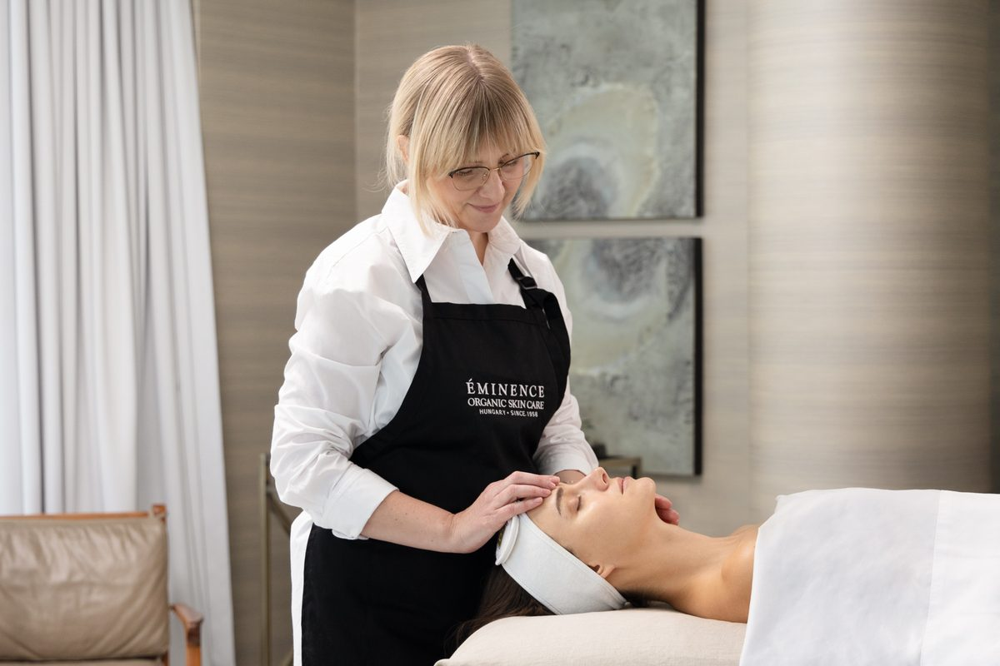

Featured case studies

A multi-sensory calm space for your new Chrome tab
My Morning Door turns Chrome's new tab into a quieter starting point using images I photographed. It combines ambient rain, ocean, forest and brown noise with optional voice guidance and short breathing, grounding or seated-release practices. No accounts, no analytics, and no browsing-history access.
Experience design · Interaction design · Cognitive accessibility
View case studyChoosing a stay with your sensory needs in mind
Nookfare starts with a traveller's sensory preferences, then uses them to shape how stays are presented and compared. Each stay is shown in relation to those preferences, with sensory details alongside practical information about arriving at the property.
Experience design · Sensory-first UX · Cognitive accessibility
View case study
How digital visual standards evolved over three years
From 2023–2026, I developed and maintained a 90-page visual style guide for Marketing Operations and Digital, while producing and managing a library of 6,000+ assets. Later updates added AI workflow guidance and guardrails.
Digital style guide · Creative operations · AI workflows
View case study Available on request